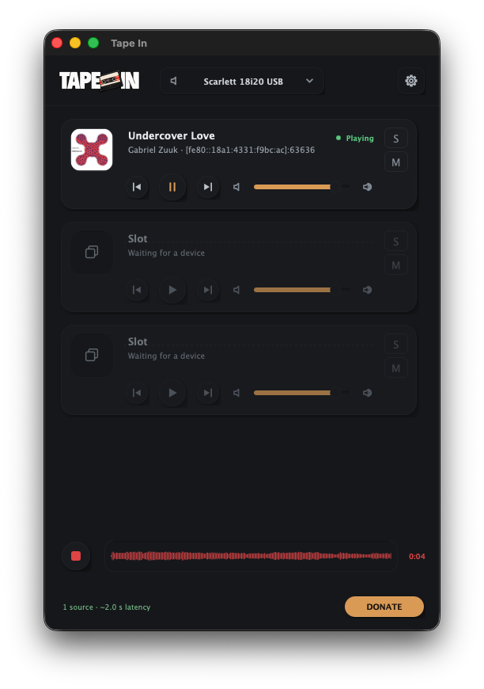

Tape In turns your Mac into an AirPlay speaker — or a recording input for your DAW. Lossless stereo, several sources at once, one little window.

Everything between the AirPlay menu and your speakers — or your session.
Every sender gets its own slot with fader, meters, mute and solo — mixed into one output.
Track, artist, album and artwork from each sender — with play, pause and skip sent back.
Record the clean incoming mix and drag the WAV straight into Ableton, Finder or anywhere.
Any output device works, including loopback drivers like BlackHole — record AirPlay on a track.
Sync, Short or Monitor latency profiles — from rock-solid playback to tighter monitoring.
Open to everyone, password-protected, or approving each new device by hand — your call.
Heard something worth keeping? One click records the clean incoming mix — before your faders — and the waveform becomes a WAV you drag straight into your session.
Download the zip above, unzip it and move Tape In.app to Applications.
This build is not notarized yet, so macOS warns on first launch. Go to System Settings → Privacy & Security → Open Anyway, or clear the quarantine flag:
xattr -dr com.apple.quarantine "/Applications/Tape In.app"
Allow the Local Network permission when asked, then pick Tape In in your iPhone's AirPlay menu. That's it.
Tape In is free, open-source software developed by Gabriel Thá in Brazil 🇧🇷 and Adam Kershen in Canada 🇨🇦. Consider a follow to support the work. If it is useful to you, a donation of any amount helps keep it going.
DONATE ANY AMOUNT